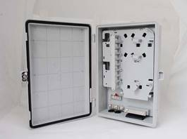

Fiber Optic Cable Distribution Box (SMC)(塑胶型光缆分纤箱）

Fiber Optic Cable Distribution Box is an access device for connecting backbone cable and distribution cable installed either indoor or outdoor. Fiber optic cables, FTTH cables and splitters are introduced, fixed and connected in the box.
There are indoor type and outdoor type distribution boxes; indoor type usually locates in the corridor or weak current well while the outdoor type locates on wall or poles. It can also be divided into plastic type and metallic type according to material.
Features
* Can either be used as Fiber Optic Distribution Box or Fiber Division Box
* Mini Fiber Optic Splitter module optional
* Rotatable distribution panel, respectively management
* Providing fixing device for outdoor cable and FTTH cable
* Fiber can be spliced, or use field connector
* Optimized design ensures the bending radius of fiber optic cables
Ordering Guide
NO. |
Type |
Dimension (mm) H*W*D |
Description |
1 |
GPX910-FSW-12a |
350*340*100 |
12 ports, 1 piece of 2：8 mini splitter installed, outdoor type |
2 |
GPX910-FSW-24a |
460*340*100 |
24 ports, 1 piece of 2：16 mini splitter installed, outdoor type |
3 |
GPX910-FSW-36a |
460*340*100 |
36 ports, 1 piece of 2：32 mini splitter installed, outdoor type |